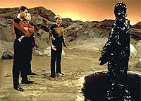
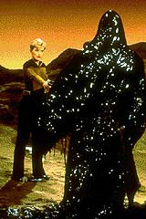
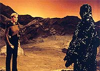
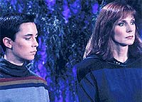
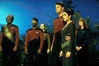

|
MANCHETE
DO EPISDIO
Roteiro
sob medida para dar uma tola
mas bem executada despedida a Tasha
Episdio
anterior | Prximo
episdio
Sinopse:
Data Estelar: 41601.3.
A Enterprise est em rota para encontrar uma nave auxiliar que traz
a conselheira Troi de uma conferncia quando um estranho defeito
faz com o veculo se choque com o planeta Vagra II. A nica forma
de vida na superfcie Armus, uma entidade misteriosa que tira
prazer do sofrimento alheio.
Picard envia Riker, Beverly Crusher, Data e Tasha Yar para resgatar
a conselheira, aps o teletransporte se mostrar ineficaz para o
procedimento. Ao descer, o grupo avanado descobre que a estranha
entidade estava envolvendo o local da queda com um campo de fora,
impedindo que Troi fosse transportada ou seus colegas pudessem
chegar nave para ajud-la. Ao tentar transpor o campo, Tasha Yar
morta insensivelmente por Armus.
 Aps
o incidente, Picard decide descer com o resto do grupo avanado em
uma tentativa de negociar a libertao das vtimas do acidente da
nave auxiliar. Armus s responde s tentativas ridizularizando e
provocando a tripulao, com jogos potencialmente mortais. Em uma
dessas ocasies, a criatura "engole" o comandante Riker.
Em outra, ela toma o controle sobre Data e ameaa obrigar o andride
a matar seus colegas com um feiser.
Enquanto Picard tenta convencer Armus, o tenente Worf e Wesley
descobrem que, quando a criatura provocada, o campo de fora ao
redor da nave auxiliar enfraquece. Picard ento comea a provocar
Armus, enquanto Worf e Wesley teleportam os sobreviventes de volta
Enterprise.
 Picard
ordena a destruio da nave auxiliar na superfcie e declara o
planeta fora dos limites para futuros viajantes da Federao,
deixando Armus abandonado permanentemente no planeta.
Retornando nave, a tripulao comparece ao holodeck para ver
uma ltima mensagem deixada por Tasha Yar caso ela morresse.
Durante a cerimnia, uma imagem hologrfica da tenente aparece,
dando um tocante adeus a cada um de seus colegas tripulantes.
Comentrios:
"Skin of Evil" uma pea criada sob
medida para dispensar a tenente Tasha Yar do elenco de Jornada,
aps a atriz pedir para deixar a srie. A pedido de Gene
Roddenberry, a morte da oficial foi tola e sem sentido, para
espelhar os riscos enfrentados diariamente por membros da equipe de
segurana de naves estelares. Ironicamente, apesar de ser nada herica,
a morte foi tremendamente bem executada.
A comear pelo momento da histria escolhido para abrig-la --o
comeo. A vantagem de colocar algo assim nos momentos iniciais do
episdio deixar o telespectador ligado no enredo, assim como
espera de uma previsvel ressurreio do personagem at o final
--algo que no acontece, para surpresa da audincia.
 Toda
a seqncia de execuo foi extremamente eficiente, comeando
do golpe fulminante de Armus, arremessando Tasha a vrios metros de
distncia, at a sensacional cena em que uma desesperada doutora
Crusher tenta reavivar a amiga perdida. Tomadas dignas de um episdio
de "Planto Mdico", muito melhores que o tracidional
"He's dead, Jim" aplicados aos
"tripulantes-desconhecidos-da-semana-escalados-para-morrer".
Em compensao, os valores de produo desse episdio ficam
abaixo da crtica. O cenrio do planeta desrtico reminiscente
das rochas de isopor e cu base de holofotes coloridos vistas na
Srie Clssica. A maquiagem de Armus uma das coisas
menos criativas e mais feias j vistas na histria de Jornada
nas Estrelas. A nave auxiliar acidentada , descaradamente, um
modelo. S sobram mesmo as tomadas externas da Enterprise, que so
to bonitas quanto de costume.
Em termos de enredo, a histria bastante conveniente a seu propsito,
mas sem grande mrito criativo. O conceito por trs de Armus
bem la Gene Roddenberry --muito mais uma metfora do que um
personagem factvel. Afinal, difcil imaginar que uma espcie
aliengena seja capaz de "destilar" sua essncia ruim e
abandon-la no planeta, na forma de Armus.
Por outro lado, se enquanto fico a idia ruim, enquanto
mensagem ela pode ser vista como uma metfora poderosa, digna dos
ideais do criador de Jornada. Em essncia, Armus representa
a idia de que as espcies precisam abandonar sua mesquinhez, sua
maldade, seu lado ruim, para bem explorar a vastido do espao.
Embora "forado", uma vez engolido, Armus faz todo
sentido. Ele trouxe a Enterprise at l para negociar uma carona
para fora daquele planeta-priso. O sujeito est abandonado por l
h milnios, sozinho. Mesmo que ele no fosse o mal
personificado, suas atitudes insensveis e de desprezo por outras
formas de vida seriam perfeitamente compreensveis.
 As
cenas que envolvem Troi e Armus so chatas at dizer chega.
Importantes para o roteiro, verdade, mas cansativas. Mas o
personagem a levar o "Trofu Abacaxi" do episdio foi
Worf. Aquele papo de a Enterprise no estar l para destruir Armus,
mas para trazer de volta os tripulantes, de modo que seria melhor
ele permanecer na posio ttica soou totalmente no-Klingon,
apesar de fazer algum sentido. O dilogo refora uma tendncia da
primeira temporada de humanizar Worf, algo que ficou patente em episdios
como "Hide and Q", e, em
menor medida, "Heart
of Glory". Felizmente os roteiristas iriam mudar isso
ao longo das prximas temporadas, dando a Worf uma personalidade
Klingon mais refinada. O equilbrio entre sua convivncia humana e
sua herana Klingon s seria plenamente estabelecido no incio da
quinta temporada, em "Redemption, Part
II".
 Finalmente,
o melhor do episdio: a cena de despedida de Tasha Yar, no holodeck.
Um discurso emocionante e a constatao da irreversibilidade da
morte da tenente do um sentido histria, fechando-a com um
pequeno interldio sobre a relao entre os que morrem e os que
continuam vivos, sintetizada na conversa de Data com o capito
Picard. No toa que Denise Crosby declarou que se mais episdios
como esse tivessem sido escritos para Tasha, ela nunca teria pedido
para deixar a srie.
Citaes:
Tasha Yar - "Hello,
my friends. You are here now watching this image of me because I
have died. It probably happened while I was on duty, and quickly,
which is what I expected. Never forget I died doing exactly what I
chose to do. What I want you to know is how much I loved my life,
and those of you who shared it with me. You are my family, you all
know where I came from and what my life was like before. But
Starfleet took that frightened, angry young girl and tempered her. I
have been blessed with your friendship, and your love."
("Ol, meus amigos. Vocs esto agora assistindo a essa
imagem minha porque eu morri. Provavelmente aconteceu quando eu
estava de servio, e rapidamente, o que eu esperava. Nunca esqueam
que eu morri fazendo exatamente o que escolhi fazer. O que quero que
saibam o quanto eu amei minha vida, e aqueles de vocs que a
compartilharam comigo. Vocs so minha famlia, vocs todos
sabem de onde eu vim e como minha vida era antes. Mas a Frota
Estelar pegou aquela menininha raivosa e assustada e a transformou.
Eu fui abenoada com suas amizades e seu amor.")
Tasha Yar - "Ah, Worf. We are so much alike, you and I. Both
warriors, orphans who found ourselves this family. I hope I met
death with my eyes wide open."
("Ah, Worf. Somos to parecidos, voc e eu. Ambos guerreiros,
rfos que encontraram essa famlia. Espero ter encontrado a
morte com meus olhos bem abertos.")
Tasha Yar - "My friend Data, you see things with the wonder
of a child. And that makes you more human than any of us."
("Meu amigo Data, voc v coisas com o vislumbre de uma criana.
E isso faz de voc mais humano que qualquer um de ns.")
Tasha Yar - "Captain Jean-Luc Picard, I wish I could say you've
been like a father to me, but I've never had one so I don't know
what it feels like. But if there was someone in this universe I
could choose to be like, someone who I would want to make proud of
me, it's you. You who have the heart of an explorer and the soul of
a poet. So, you'll understand when I say, 'Death is that stage in
which one exists only in the memory of others', which is why it is
not an end. No goodbyes, just good memories. Hailing frequencies
closed, sir."
("Capito Jean-Luc Picard, eu gostaria de poder dizer que voc
foi como um pai para mim, mas eu nunca tive um, ento no sei como
esse sentimento. Mas se houvesse algum nesse Universo que eu
escolheria para s-lo, algum que eu gostaria que se orgulhasse de
mim, o senhor. Voc tem o corao de um explorador e a alma de
um poeta. Ento, voc entender quando eu digo, 'a morte um
estgio em que algum existe apenas na memria dos outros', por
isso no um fim. Sem adeus, apenas boas lembranas. Frequncias
de saudao fechadas, senhor.")
Data - "Sir, the purpose of this gathering... confuses
me."
("Senhor, o propsito dessa reunio... me intriga.")
Picard - "Oh? How so?"
("Oh? Como assim?")
Data - "My thoughts are not for Tasha, but for myself. I
keep thinking, how empty it will be without her presence. Did I miss
the point?"
("Meus pensamentos no so por Tasha, mas por mim mesmo. Eu
fico pensando o quo vazio ser sem a presena dela. Eu no
entendi?")
Picard - "No you didn't Data. You got it."
("No, Data. Voc entendeu sim.")
Trivia:
 Denise Crosby disse depois que se cenas como aquela na abertura, em
que ela contracena com Worf, fossem escritas com mais frequncia,
ela no teria deixado a srie.
Denise Crosby disse depois que se cenas como aquela na abertura, em
que ela contracena com Worf, fossem escritas com mais frequncia,
ela no teria deixado a srie.
"Gene no quis que a criatura fosse morta neste episdio",
disse a roteirista Hannah Louise Shearer. "Os seres humanos no
deveriam julgar ningum, segundo Gene, ento o modo de punir Armus
pela morte da Tasha foi fazer uma justia ao estilo 'olho por
olho'."
Se voc achou que os atores estavam interpretando bem o sentimento
de perda de Tasha Yar na cena final no holodeck, fique sabendo que a
tristeza realmente existia, pois os atores estavam muito chateados
pela sada de Denise Crosby do elenco. Marina Sirtis era uma das
mais tristes.
Ficha
tcnica:
Histria de Joseph Stefano
Roteiro de Joseph Stefano e Hannah Louise Shearer
Direo de Joseph L. Scanlan
Exibido em 25/04/1988
Produo: 022
Elenco:
Patrick Stewart como
Jean-Luc Picard
Jonathan Frakes como William Thomas Riker
Brent Spiner como Data
LeVar Burton como Geordi La Forge
Michael Dorn como Worf
Gates McFadden como Beverly Crusher
Marina Sirtis como Deanna Troi
Wil Wheaton como Wesley Crusher
Denise Crosby como Natasha "Tasha" Yar
Elenco convidado:
Mart McChesney, com
voz de Ron Gans, como Armus
Walker Boone como tenente-comandante Leland T. Lynch
Brad Zerbst como enfermeiro
Raymond Forchion como tenente Ben Prieto
Episdio
anterior | Prximo
episdio
|